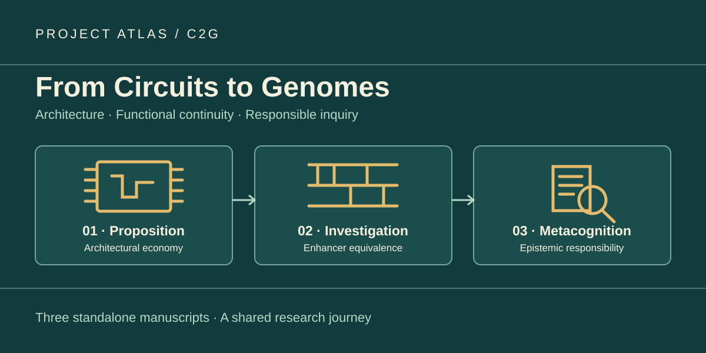

RANDALL YOUNG · PROJECT ATLAS · RESEARCH AND SCHOLARSHIP
From Circuits to Genomes
An interdisciplinary investigation of architectural economy, functional continuity, and AI-augmented scientific inquiry.

C2G · Research portfolio · 25 November 2026
Can function persist when its implementation changes?
The question began with computer architecture. It led to a computational investigation of genomic regulation, then to a study of the investigator's own use of AI.
Randall S. Young, Ed.S. · Independent researcher · ORCID
Working manuscripts, not peer reviewed. Independent validation pending.
A changing implementation, a persistent functionThe computing analogy motivates H3: the biological counterpart is a proposed hypothesis, not a demonstrated equivalence.Paper 1 v8 · Figure 12 · p. 17 · conceptual schematic · Cropped from the manuscript; click to enlarge.
01 · Three independent contributions
The proposition, the investigation, the metacognition
Paper 1 · Theory and computation
Architectural Economy in Biological and Technological Systems
v8.0 · 22 pages · 24 Nov 2026
Reuse saves resources but concentrates failure dependencies. Computational models explore how coordination and redundancy affect reliability, and motivate biological hypotheses.
Functional Equivalence Mapping in Primate Enhancer Evolution
v1.0 · 16 pages · 24 Nov 2026
Reanalyzes public enhancer reporter assays to distinguish statistical equivalence, divergence, and inconclusive measurements. Tests candidate predictors of retained activity.
A retrospective case study of how AI can expand methodological reach faster than the investigator's ability to evaluate the findings, and the responsibilities that follow.
Each paper is intended for separate publication. Paper 3 uses the first two as case-study artifacts; its research question does not depend on their biological conclusions being correct.
02 · Evidence and limitations
Distinguish the finding from the claim
70.8%
Reported code-word savings from sharing a PDP-8 multiplication routine at 64 tasks; fault liability increases.
636 regions
Exploratory K562 pilot across 408 genes; the predicted association was not supported.
63.2% / 43.5%
Reported equivalence classification with / without variance moderation among 386 active human–chimpanzee fragments at the same margin.
Hypothesis
Current evidence
H1 · Architectural economy
Supported within specified computational models; sensitive to fault scope.
H2 · Sequence constraint
Not supported in the exploratory K562 pilot.
H3 · System-level functional continuity
Prospective; not established.
H3-M · Molecular equivalence
Investigated in Paper 2; mixed findings and specialist validation pending.
Reporter activity is not equivalent to endogenous gene regulation. These are manuscript-reported results, not an established discovery.
Inside the manuscripts · Visual evidence
See the diagrams and reported results
Original manuscript figures, cropped without changing their plotted values. The diagrams are conceptual; the empirical figures show the authors' reported reanalysis, not independently reproduced results.
Where dependencies accumulateBiological fan-out and computing fan-in are contrasting architectures that can both concentrate failure liability.Paper 1 v8 · Figure 3 · p. 5 · conceptual schematic · Cropped from the manuscript; click to enlarge.
Functional equivalence in primate enhancersThe plotted classifications depend on the selected margin and empirical-Bayes variance moderation.Paper 2 v1 · Figure 2 · p. 8 · reported analysis · Cropped from the manuscript; click to enlarge.Why measurement precision mattersChanging the equivalence margin or variance model alters the classification. Different assay contexts are not a controlled head-to-head comparison.Paper 2 v1 · Figure 3 · p. 9 · reported analysis · Cropped from the manuscript; click to enlarge.
03 · The architecture of inquiry
Human direction, multiple AI systems, independent verification
The investigator directs the research. ChatGPT and Gemini NEON/Antigravity assist with analysis, implementation, revision and critique. Shared GitHub artifacts carry the work across platforms. Cross-model agreement is not independent scientific review.
Paper 3 distinguishes methodological reach, epistemic competence and evidential warrant. Recognizing the limits of one's understanding creates a responsibility to seek qualified help. The educational question is how to expand investigative capability while retaining critical judgment.
An accountable inquiry frameworkA proposed decision process for determining what evidence supports, when to seek help and when to revise a claim.Paper 3 v0.2 · Table 2 · p. 6 · proposed framework · Cropped from the manuscript; click to enlarge.
04 · Continue the investigation
Invitation to scientific and educational reviewers
We invite scrutiny of the computational benchmarks, statistical methods, biological interpretation and research-process evidence. The priority is independent verification, not a claim of breakthrough.